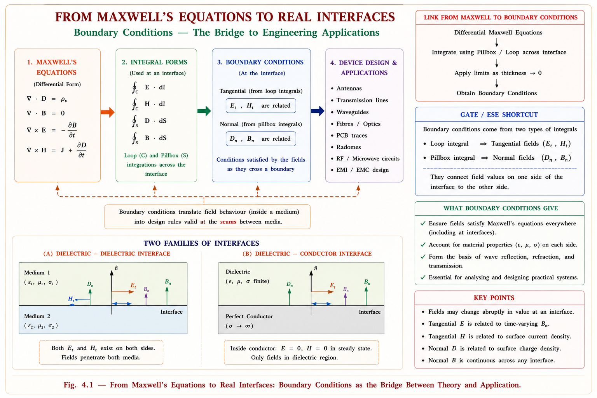
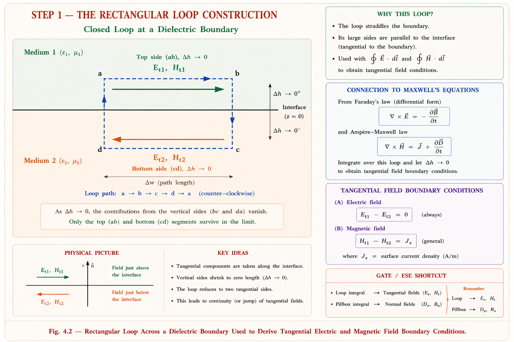
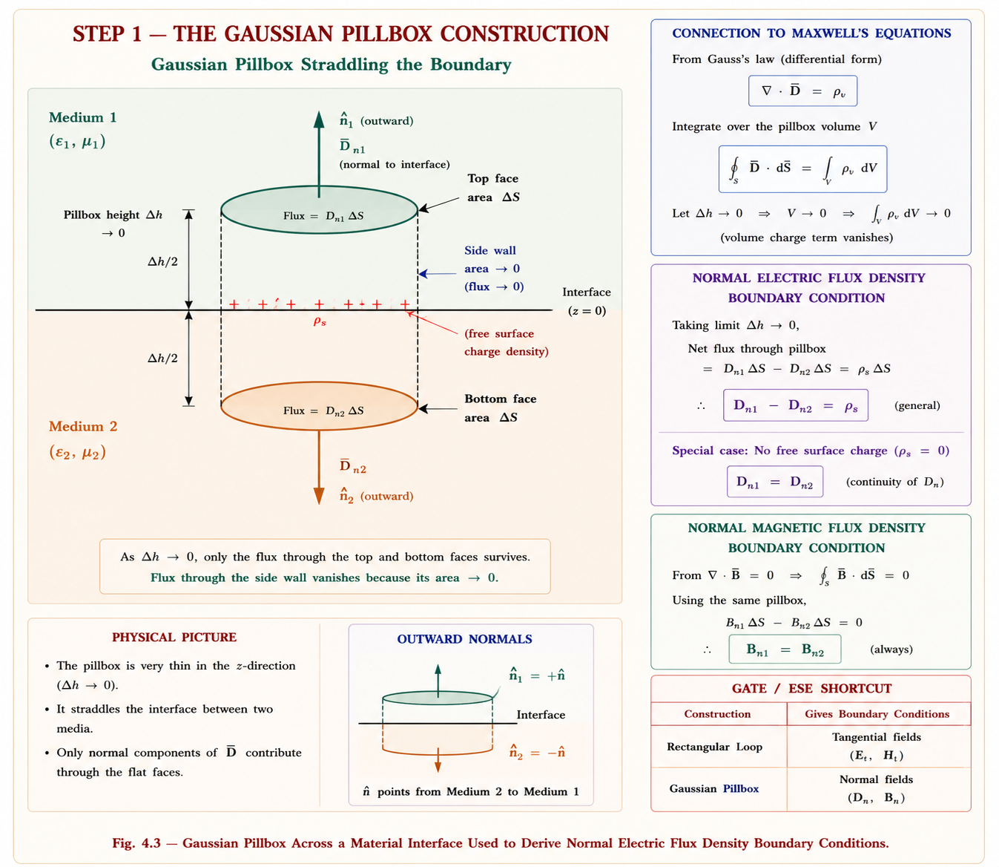
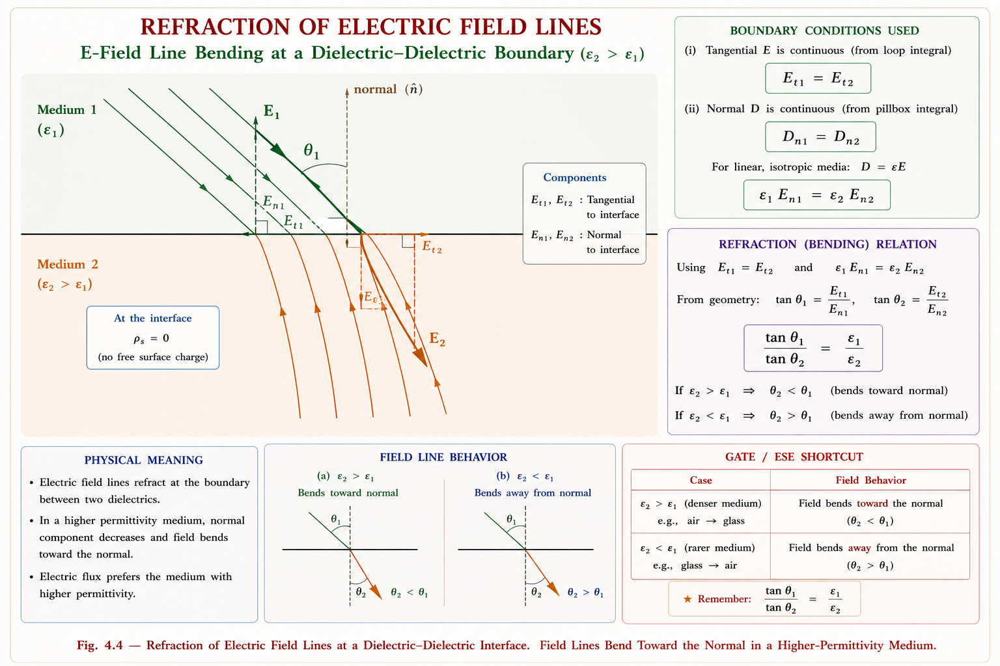
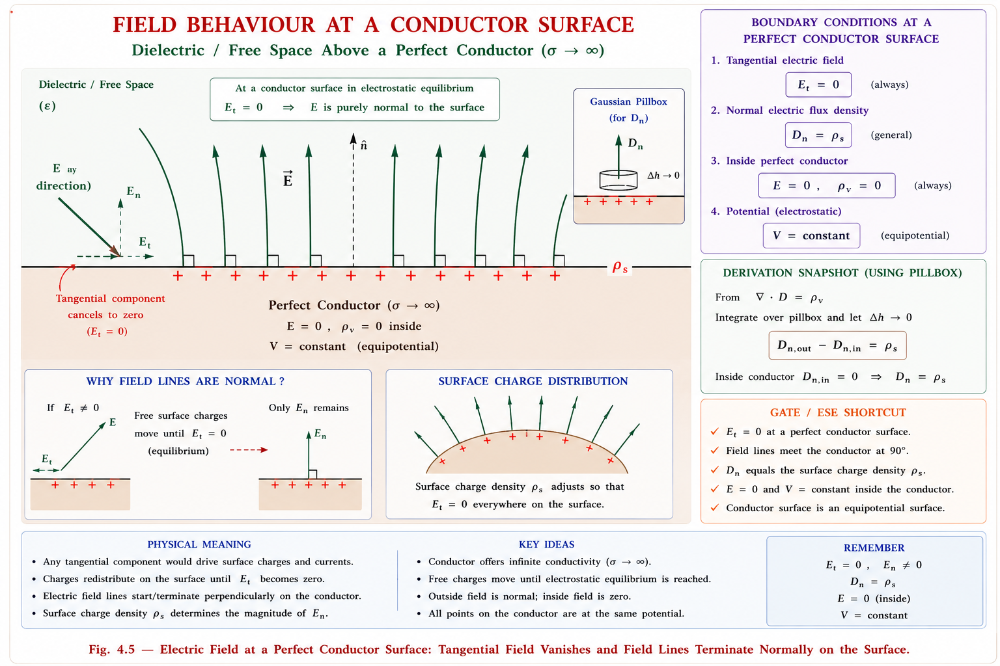
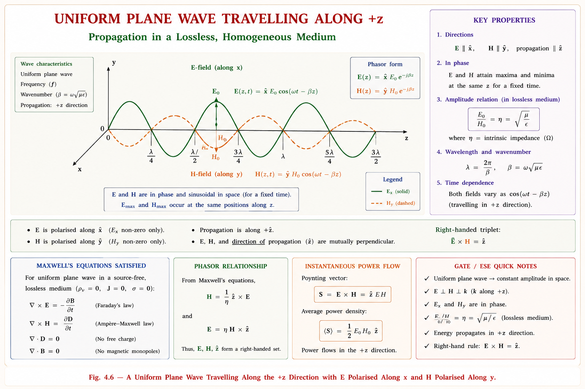

Dielectric–dielectric and conductor boundaries, tangential and normal field conditions, and the complete derivation of the electromagnetic wave equation from Maxwell's equations — comprehensive coverage of GATE EC and IES ETE exam concepts with full derivations and solved examples.
Maxwell's equations are written for points inside a single, continuous medium. But almost every real device — a coaxial cable, an optical fibre, a microstrip antenna, a capacitor with a dielectric slab — is built from two or more different materials placed side by side. At the surface where one medium ends and another begins, the field vectors \(\mathbf{E}, \mathbf{D}, \mathbf{B}, \mathbf{H}\) can change abruptly. Boundary conditions are the precise mathematical rules that tell us exactly how much each field component is allowed to jump, and how much must stay continuous, when crossing that interface.
Without boundary conditions, you cannot solve a single practical EM problem. Every antenna, waveguide, transmission line, optical fibre and radar cross-section calculation begins by applying boundary conditions at a material interface. They convert Maxwell's differential equations (valid only inside a medium) into design rules valid at the seams between media.

To find how the tangential (surface-parallel) components of \(\mathbf{E}\) and \(\mathbf{H}\) behave at an interface, we apply the integral form of Faraday's law and Ampère's law around a thin rectangular loop that straddles the boundary, with its long sides parallel to the surface and its short sides shrunk to zero height.

Faraday's law in integral form states that the line integral of E around any closed loop equals the negative rate of change of magnetic flux linking that loop:
As the loop height \(\Delta h \to 0\), the enclosed area \(S = \Delta w \cdot \Delta h \to 0\), so the right-hand side (flux through the loop) vanishes — no matter how large \(\mathbf{B}\) is, multiplying by a vanishing area gives zero. The side segments of the loop (height \(\Delta h\)) also contribute negligibly to the line integral as \(\Delta h \to 0\). Only the top and bottom horizontal segments remain:
The tangential component of \(\mathbf{E}\) is continuous across any boundary, dielectric or otherwise: $$E_{t1} = E_{t2}$$ This holds regardless of the permittivities \(\varepsilon_1\), \(\varepsilon_2\) on either side.
The same loop, applied to Ampère's law (with Maxwell's displacement-current correction), gives the condition for \(\mathbf{H}\):
As before, the displacement-current term vanishes as the enclosed area shrinks to zero. The conduction current term \(I_{enc}\), however, survives only if a surface current \(\mathbf{J}_s\) physically flows along the boundary (this happens on a perfect conductor, not an ordinary dielectric):
$$\mathbf{a_n} \times (\mathbf{H_1} - \mathbf{H_2}) = \mathbf{J_s}$$ If no free surface current exists (true for two ordinary dielectrics, since they cannot carry surface current), $$H_{t1} = H_{t2}$$ Tangential \(\mathbf{H}\) is discontinuous only at a conductor surface carrying surface current density \(\mathbf{J}_s\).
Many students assume \(\mathbf{H}\) is always continuous, like \(\mathbf{E}\). This is wrong — \(H_t\) is continuous only when \(\mathbf{J}_s = 0\). At a perfect conductor surface, \(\mathbf{J}_s\) is non-zero and exactly equals \(H_t\) (tangential) in the adjacent dielectric. This is a frequent GATE conceptual trap.
For the components perpendicular to the boundary, the natural tool is Gauss's law applied to a thin pillbox (a small cylinder) that straddles the interface, with its flat faces parallel to the surface and its height shrunk to zero.

Gauss's law for the electric flux density states that the total outward flux of D through any closed surface equals the free charge enclosed:
As the pillbox height \(\Delta h \to 0\), the side-wall area shrinks to zero, so flux through the curved sides vanishes. Only the top face (in medium 1) and bottom face (in medium 2) contribute, and the normal directions on the two faces point in opposite senses:
$$\mathbf{a_n}\cdot(\mathbf{D_1} - \mathbf{D_2}) = \rho_s$$ If the boundary carries no free surface charge (the normal case at a dielectric–dielectric interface, since dielectrics don't host free surface charge): $$D_{n1} = D_{n2} \quad\text{i.e.}\quad \varepsilon_1 E_{n1} = \varepsilon_2 E_{n2}$$ Notice that \(E_n\) itself is not continuous — only \(D_n\) is, unless \(\rho_s = 0\) forces a relation between the two \(E_n\) values.
Magnetic flux density has no free "magnetic charge" — Gauss's law for B always gives zero enclosed source:
Applying the identical pillbox argument, the same cancellation of side-wall flux occurs, but now the top and bottom face contributions must sum to exactly zero — with no charge-like source term possible:
The normal component of \(\mathbf{B}\) is always continuous at any boundary — dielectric, conductor, or otherwise: $$B_{n1} = B_{n2}$$ This is a direct, unconditional consequence of the absence of magnetic monopoles (\(\nabla\cdot\mathbf{B} = 0\)).
Discontinuous normal component → needs surface charge \(\rho_s\) (like a "DJ" needing a gate pass at the door). \(\mathbf{B}\)'s normal component never breaks — always continuous, because there is no magnetic monopole to create a jump.
When \(\rho_s = 0\) and \(\mathbf{J}_s = 0\) (the standard case for two perfect, charge-free dielectrics in contact), the four conditions reduce to a clean, symmetric set. Combining them lets us derive how an electric field line bends ("refracts") when crossing into a denser dielectric — directly analogous to Snell's law in optics.
| Field Component | General Condition | Charge/Current-Free Case |
|---|---|---|
| Tangential E | \(E_{t1} = E_{t2}\) | Always continuous |
| Tangential H | \(H_{t1} - H_{t2} = J_s\) | Continuous (\(J_s = 0\)) |
| Normal D | \(D_{n1} - D_{n2} = \rho_s\) | Continuous (\(\rho_s = 0\)) |
| Normal B | \(B_{n1} = B_{n2}\) | Always continuous |

Let \(\theta_1\) and \(\theta_2\) be the angles the field lines make with the normal in medium 1 and medium 2 respectively. From the geometry, the tangential components are \(E \sin \theta\), and the normal components are \(E \cos \theta\).
Dividing the first equation by the second eliminates \(E_1\) and \(E_2\) entirely:
Since \(\varepsilon_2 > \varepsilon_1\) makes \(\tan \theta_2 > \tan \theta_1\) false — rearranged correctly, \(\frac{\tan \theta_1}{\varepsilon_1} = \frac{\tan \theta_2}{\varepsilon_2}\) means a larger \(\varepsilon_2\) forces a smaller \(\theta_2\) for the same \(\theta_1\) — the field bends toward the normal on entering the denser dielectric, mirroring Snell's law in optics where light bends toward the normal entering a higher refractive-index medium.
This refraction relation explains why layered capacitor dielectrics redistribute field unevenly, why PCB substrates with different \(\varepsilon_r\) create fringing fields at trace edges, and why electric field lines crowd into the lower-permittivity layer of a composite insulation system — a key consideration in high-voltage insulation design.
A perfect conductor (\(\sigma \to \infty\)) is the second major interface type. Inside a perfect conductor under static or low-frequency conditions, all charge redistributes instantly so that the interior field is exactly zero — any residual field inside would drive infinite current. This single fact, \(E_{inside} = 0\), forces every field component at the conductor's surface into a special, simplified form.
From Ohm's law in point form, \(\mathbf{J} = \sigma\mathbf{E}\). For a finite current density \(\mathbf{J}\) with \(\sigma \to \infty\), \(\mathbf{E}\) must \(\to 0\). Any field that briefly exists inside drives free charges to the surface almost instantaneously, until the interior field cancels to zero and a static equilibrium is reached.

Apply the same loop and pillbox arguments as before, but now treat region 2 as the conductor interior, where \(\mathbf{E}_2 = 0\) and \(\mathbf{B}_2 = 0\) (in the static/steady case).
At a dielectric–dielectric boundary: \(E_t\), \(H_t\), \(D_n\), \(B_n\) are all continuous (charge/current-free case). At a conductor surface: \(E_t = 0\) and \(B_n = 0\) (forced to zero), while \(D_n = \rho_s\) and \(H_t = J_s\) are non-zero and determined by the induced surface charge/current. These are fundamentally different rule sets — GATE often tests this exact distinction.
Before deriving the wave equation, we need Maxwell's four equations in point (differential) form, valid inside a source-free (\(\rho_v = 0, \mathbf{J} = 0\)), linear, homogeneous, isotropic medium such as free space or a lossless dielectric. This is the standard assumption for deriving the basic EM wave equation.
We are looking for how EM waves propagate away from their source, through empty space or a dielectric. Far from any charge or current, the local charge density and conduction current are both zero — yet \(\partial\mathbf{D}/\partial t\) (displacement current) is non-zero and is precisely what sustains wave propagation. This is Maxwell's single greatest insight: a changing \(\mathbf{E}\) creates \(\mathbf{H}\), and a changing \(\mathbf{H}\) creates \(\mathbf{E}\), even with no charges or currents present.
For a linear, homogeneous, isotropic medium, \(\mathbf{D}\) and \(\mathbf{B}\) relate to \(\mathbf{E}\) and \(\mathbf{H}\) through the material permittivity \(\varepsilon\) and permeability \(\mu\):
These two curl equations — \(\nabla \times \mathbf{E} = -\mu \frac{\partial\mathbf{H}}{\partial t}\) and \(\nabla \times \mathbf{H} = \varepsilon \frac{\partial\mathbf{E}}{\partial t}\) — are coupled: \(\mathbf{E}\) depends on the time-derivative of \(\mathbf{H}\), and \(\mathbf{H}\) depends on the time-derivative of \(\mathbf{E}\). The wave equation is obtained by decoupling them into two independent second-order equations, each in a single field variable.
We now decouple Maxwell's two curl equations to obtain a standalone, second-order partial differential equation for \(\mathbf{E}\) alone (and, by symmetry, for \(\mathbf{H}\) alone). This is the single most frequently derived result in EMFT and appears almost every year in GATE EC.
Starting from Faraday's law, apply the curl operator to both sides:
Since space and time derivatives commute (the medium is time-invariant), we can swap the order of ∇× and ∂/∂t on the right-hand side:
Now substitute \(\nabla \times \mathbf{H} = \varepsilon \frac{\partial\mathbf{E}}{\partial t}\) from Ampère's law directly into the right-hand side:
The right-hand side now contains only \(\mathbf{E}\) — \(\mathbf{H}\) has been completely eliminated. This is the decoupling step.
The left-hand side is simplified using the standard vector calculus identity for the curl of a curl:
In our source-free, homogeneous medium, Gauss's law gives \(\nabla \cdot \mathbf{D} = 0\), and since \(\mathbf{D} = \varepsilon\mathbf{E}\) with \(\varepsilon\) constant throughout the medium, this means \(\nabla \cdot \mathbf{E} = 0\) as well. The first term on the right vanishes entirely:
Equating the two simplified expressions for the left-hand side:
By an exactly symmetric derivation — taking the curl of Ampère's law first and substituting Faraday's law — the identical equation is obtained for H:
\(\nabla^2\mathbf{E}\) — the spatial curvature of the field (how rapidly it varies in space). \(\partial^2\mathbf{E}/\partial t^2\) — the temporal acceleration of the field. \(\mu\varepsilon\) — couples space and time; its reciprocal square-root has units of velocity. This equation says the field's spatial curvature is proportional to its time-acceleration — the defining signature of a wave.
The standard 3-D scalar wave equation in physics is written as:
Comparing term-by-term with our derived equation, \(\mu\varepsilon\) plays the role of \(1/v^2\), so the velocity of propagation in the medium is:
In free space (\(\mu = \mu_0\), \(\varepsilon = \varepsilon_0\)):
Maxwell computed this number purely from electric and magnetic measurements (μ₀ and ε₀, both determined by static experiments) and found it matched the independently-measured speed of light. This was the first theoretical proof that light is an electromagnetic wave — one of the most celebrated results in physics.
If the medium has finite conductivity \(\sigma\) (a lossy dielectric or imperfect conductor), Ampère's law picks up an additional conduction-current term \(\mathbf{J} = \sigma\mathbf{E}\), and the derivation produces an extra first-derivative damping term:
The extra term \(\mu\sigma \frac{\partial\mathbf{E}}{\partial t}\) represents attenuation — energy lost to Joule heating as the wave travels through a conducting or lossy medium. Setting \(\sigma = 0\) recovers the lossless wave equation derived above.
Students often forget that the vector identity \(\nabla \times (\nabla \times \mathbf{E}) = \nabla(\nabla \cdot \mathbf{E}) - \nabla^2\mathbf{E}\) requires \(\nabla \cdot \mathbf{E} = 0\) to simplify cleanly. This is only true in a source-free, homogeneous medium. If free charge is present (\(\rho_v \neq 0\)), the wave equation picks up an extra gradient-of-charge term and the clean form above no longer holds — a frequent GATE numerical trap when a problem mentions "in the presence of free charge."
The simplest non-trivial solution of the wave equation is a uniform plane wave — a wave whose \(\mathbf{E}\) and \(\mathbf{H}\) fields are uniform across any infinite plane perpendicular to the direction of travel. Assume propagation along the +z direction, with \(\mathbf{E}\) polarised along x.

Substituting an assumed sinusoidal solution of the form below into the wave equation confirms that it satisfies the PDE for the correct choice of wave number \(\beta\):
where:
The corresponding \(\mathbf{H}\) field, obtained from Maxwell's equations, is in phase with \(\mathbf{E}\) (in a lossless medium) and related to it by the intrinsic impedance of the medium:
For free space:
In a uniform plane wave travelling in a lossless, source-free medium, \(\mathbf{E}\), \(\mathbf{H}\), and the direction of propagation are mutually perpendicular — this is called a Transverse ElectroMagnetic (TEM) wave. Neither \(\mathbf{E}\) nor \(\mathbf{H}\) has any component along the direction of travel.
Point fingers along \(\mathbf{E}\), curl toward \(\mathbf{H}\), thumb gives direction of propagation (\(\mathbf{E} \times \mathbf{H}\) direction) — same right-hand rule used for the Poynting vector \(\mathbf{S} = \mathbf{E} \times \mathbf{H}\), which gives the direction of power flow.
Given: \(\varepsilon_{r1} = 2\), \(\varepsilon_{r2} = 5\), \(E_{n1} = 10 \text{ V/m}\), \(\rho_s = 0\) (charge-free)
Step 1 — Apply \(D_{n1} = D_{n2}\) (since \(\rho_s = 0\)):
Step 2 — Solve for \(E_{n2}\):
Step 3 — Find \(D_{n2}\):
\(D_{n1} = \varepsilon_0\varepsilon_{r1} E_{n1} = 8.854 \times 10^{-12} \times 2 \times 10 = 1.77 \times 10^{-10} \text{ C/m}^2\) — matches \(D_{n2}\) exactly, confirming \(D_n\) is continuous when \(\rho_s = 0\).
Given: \(\theta_1 = 60^\circ\), \(\varepsilon_{r1} = 1\), \(\varepsilon_{r2} = 3\)
Apply the refraction relation:
Notice \(\theta_2 > \theta_1\) here — the field bent away from the normal, because we went from a lower-\(\varepsilon\) to a higher-\(\varepsilon\) medium with this specific formula convention. Always double-check which medium \(\varepsilon\) is associated with which \(\theta\) in the formula before substituting — sign/placement errors are the most common mistake in this numerical.
Inside the conductor, \(\mathbf{H} = 0\) (perfect conductor, steady-state). Apply the tangential \(\mathbf{H}\) boundary condition:
Answer: \(\mathbf{J}_s = -5\,\mathbf{a}_x \text{ A/m}\), magnitude 5 A/m, flowing in the \(-x\) direction along the conductor surface.
Whenever a problem states "tangential \(\mathbf{H}\) exists just outside a perfect conductor," that field must be sustained by an exactly equal surface current — there is no other source for it, since \(\mathbf{H} = 0\) inside. This cross-product relation also fixes the current's direction, not just its magnitude.
Given: \(f = 3 \times 10^9 \text{ Hz}\), \(\varepsilon_r = 4\), \(\mu_r = 1\)
(i) Phase velocity:
(ii) Wavelength:
The free-space wavelength at 3 GHz would be \(\lambda_0 = c/f = 10 \text{ cm}\). Inside a dielectric with \(\varepsilon_r = 4\), both velocity and wavelength shrink by a factor of \(\sqrt{\varepsilon_r} = 2\) — this is the basis for dielectric-loaded waveguides and miniaturised antennas.
Differentiate twice with respect to \(z\):
Differentiate twice with respect to \(t\):
Substitute into the wave equation and cancel the common cosine factor:
This confirms that any assumed sinusoidal travelling-wave form automatically satisfies Maxwell's wave equation, provided \(\beta\) is fixed at \(\omega\sqrt{\mu\varepsilon}\). This is exactly how phase velocity \(v = \omega/\beta = 1/\sqrt{\mu\varepsilon}\) is recovered, consistent with Section 4.7.
Boundary conditions and the wave equation are 🟢 High Probability topics — almost every GATE EC paper includes at least one question directly testing these concepts, often combined with plane wave parameters.
GATE frequently asks students to identify which field components are continuous across a general boundary. The safest approach: derive from first principles each time using the loop/pillbox method rather than memorising — many trick questions modify the standard assumptions (e.g. introducing a surface current on a dielectric, which is physically impossible and signals an error in the question itself, or testing whether you know ordinary dielectrics cannot carry \(\mathbf{J}_s\)).
At the interface between two perfect dielectrics with no free surface charge, which pair of field components is guaranteed to be continuous across the boundary?
Explanation: The four standard conditions are \(E_{t1} = E_{t2}\), \(H_{t1} = H_{t2}\) (when \(\mathbf{J}_s = 0\)), \(D_{n1} = D_{n2}\) (when \(\rho_s = 0\)), \(B_{n1} = B_{n2}\) (always). Option (B) correctly pairs a tangential \(\mathbf{E}\) result with a normal \(\mathbf{D}\) result — these are the two conditions that directly follow from Faraday's law and Gauss's law respectively.
An EM wave propagates in a lossless, non-magnetic dielectric with relative permittivity \(\varepsilon_r = 9\). The speed of the wave in this medium, compared to free space, is:
Explanation: \(v = c/\sqrt{\mu_r\varepsilon_r} = c/\sqrt{1\times 9} = c/3\). Wave speed in any dielectric with \(\varepsilon_r > 1\) is always slower than \(c\), never faster — eliminating (A) and (B) immediately. Since \(\mu_r = 1\), only \(\varepsilon_r\) determines the slowdown factor, giving exactly \(c/3\).
Which of the following statements about the field at the surface of a perfect conductor (\(\sigma \to \infty\)) is/are correct?
1. The tangential component of \(\mathbf{E}\) is zero | 2. The normal component of \(\mathbf{B}\) is zero | 3. Field lines meet the conductor surface at 90°
Explanation: All three statements are direct consequences of the conductor boundary conditions derived in Section 4.5: \(E_t = 0\) (statement 1 ✓), \(B_n = 0\) (statement 2 ✓), and since \(E_t = 0\), the resultant field must be purely normal — meeting the surface at exactly 90° (statement 3 ✓).
While deriving the wave equation \(\nabla^2\mathbf{E} = \mu\varepsilon \frac{\partial^2\mathbf{E}}{\partial t^2}\) from Maxwell's curl equations, the term \(\nabla(\nabla \cdot \mathbf{E})\) is dropped. This step is valid because:
Explanation: \(\nabla \cdot \mathbf{E} = 0\) is not a universal identity — it follows specifically from Gauss's law (\(\nabla \cdot \mathbf{D} = \rho_v = 0\)) combined with \(\mathbf{D} = \varepsilon\mathbf{E}\) in a homogeneous medium (constant \(\varepsilon\)). If free charge were present, or \(\varepsilon\) varied spatially, this term would not vanish and the clean wave equation would gain an extra source term.
Tangential fields (\(E_t\), and \(H_t\) when \(\mathbf{J}_s = 0\)) just "tag along" continuously across any boundary. Normal fields (\(D_n, B_n\)) "need notice" of a possible jump — \(D_n\) jumps if there's surface charge, while \(B_n\) famously never jumps because there's no magnetic charge to cause one.
Curl Faraday's law, Apply Ampère's law to eliminate \(\mathbf{H}\), Gauss's law kills the \(\nabla(\nabla \cdot \mathbf{E})\) term, Simplify to get \(\nabla^2\mathbf{E} = \mu\varepsilon \frac{\partial^2\mathbf{E}}{\partial t^2}\) — four steps, in order, every single time.
Have a question on boundary conditions, the wave equation, or plane waves? Type below or pick a suggestion.
\(E_{t1} = E_{t2}\) always (from Faraday's law, area \(\to 0\) kills flux term). \(H_{t1} - H_{t2} = J_s\) (from Ampère's law); \(H_t\) continuous only if \(J_s = 0\), true for dielectrics, false at conductors.
\(D_{n1} - D_{n2} = \rho_s\) (from Gauss's electric law, pillbox method). \(B_{n1} = B_{n2}\) always — direct consequence of \(\nabla \cdot \mathbf{B} = 0\), no magnetic monopoles exist.
\(E_t = 0\) (equipotential surface). \(D_n = \rho_s\) (all flux ends on surface charge). \(H_t = J_s\) (tangential \(\mathbf{H}\) sustained by surface current). \(B_n = 0\) (no flux penetrates).
\(\frac{\tan \theta_1}{\varepsilon_1} = \frac{\tan \theta_2}{\varepsilon_2}\) at a charge-free dielectric boundary. Field bends toward normal entering higher-\(\varepsilon\) medium, exactly like Snell's law for light.
Curl Faraday's law → substitute Ampère's law → apply vector identity \(\nabla \times (\nabla \times \mathbf{E}) = \nabla(\nabla \cdot \mathbf{E}) - \nabla^2\mathbf{E}\) → use \(\nabla \cdot \mathbf{E} = 0\) (source-free) → \(\nabla^2\mathbf{E} = \mu\varepsilon \frac{\partial^2\mathbf{E}}{\partial t^2}\). Symmetric derivation gives \(\nabla^2\mathbf{H} = \mu\varepsilon \frac{\partial^2\mathbf{H}}{\partial t^2}\).
\(v = 1/\sqrt{\mu\varepsilon}\), \(c = 1/\sqrt{\mu_0\varepsilon_0} \approx 3\times10^8 \text{ m/s}\). \(\beta = \omega\sqrt{\mu\varepsilon}\). \(\eta = \sqrt{\mu/\varepsilon}\), \(\eta_0 \approx 377\ \Omega\). TEM wave: \(\mathbf{E}\), \(\mathbf{H}\), direction of travel mutually perpendicular.
All technical content is derived from the following standard textbooks and learning resources. All explanations, derivations, diagrams and examples are original to Aarova AI.